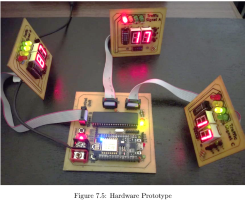
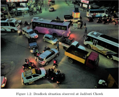
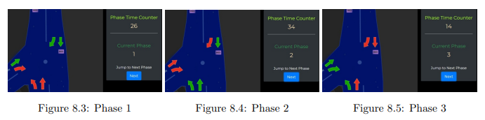
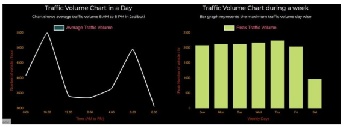
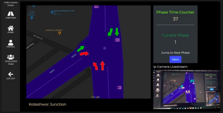
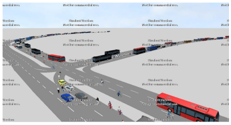

Vehicle Traffic Management and Analysis
Minor Project
2020
Traffic Jams have been significant problems in
Kathmandu valley
especially at traffic junctions and crossroads.
Efficient traffic
management systems have to be implemented at such
places. But,
traffic lights on most road
intersections operate on a fixed
timing schedule that lead to unnecessary delays,
deadlock
situations and lead to higher fuel
consumption. Our goal is to design a system that can
detect the
the flow of traffic across those
junctions, analyze those data, and create an optimal
traffic light
sequences that can best counteract that
situation.
We focused our study in one of most congested traffic junctions - Koteshwor, Jadibuti and Lokanthali, where we often see huge traffic jams and even deadlocks.
We focused our study in one of most congested traffic junctions - Koteshwor, Jadibuti and Lokanthali, where we often see huge traffic jams and even deadlocks.
The street lighting system is based on the
electronic
controller that utilizes the traffic density
survey data. Data were collected and analyzed at
different
busy junctions of Kathmandu Valley.
Cameras were used to capture video of the
specific junction
at various times, which was then processed
to get the vehicle flow of the corresponding
time.
The data gives an insight into the number of
vehicles
entering the junction and the time required
to cross it. This is helpful to calculate the
stoppage time which was programmed into the
system for optimized and efficient traffic
management.


Project consisted of six major dissections-
Data
Collection,
Modeling, Data Analysis & Predictions,
Hardware Design &
Fabrications, WebApp Development, and
Testing and
Optimization.
My roles were
solely in WebApp
development with few collaborative
contributions to Data
Collections & Analysis and in Simulations.
1. WebApp
WebApp was individually handled by me to simulate as traffic control panel with purposes as:
WebApp was individually handled by me to simulate as traffic control panel with purposes as:
- Monitor Purpose
- To monitor dynamic traffic simulation based on time sequence
- To monitor currently operating phase
- To watch live stream video of the junction
- Control Purpose
- To control and reset the phase in case of emergency
Only Authenticated Access
The access to web application is possible by only the authenticated user preventing access, modification, traffic hijackings.
The access to web application is possible by only the authenticated user preventing access, modification, traffic hijackings.
Time Basis Simulation
The WebApp could show the current junction, with accessible phase in green color and blocked phases in red color. Also, phase reset action is available to reset the phase in case of emergency. Chart volume density on daily or weekly basis can also be observed
The WebApp could show the current junction, with accessible phase in green color and blocked phases in red color. Also, phase reset action is available to reset the phase in case of emergency. Chart volume density on daily or weekly basis can also be observed


Live Stream
Live Stream video from IP camera connected to the junction can be monitored.
Live Stream video from IP camera connected to the junction can be monitored.

2. Traffic Data Collections &
Analysis &
Optimization
Traffic Data were collected in Koteshwor and Jadibuti junctions. Following things were done at the beginning of the project:

Traffic Data were collected in Koteshwor and Jadibuti junctions. Following things were done at the beginning of the project:
- Existing flow of vehicles per unit time (Vehicle Density)
- Dimensions of the road
- Number of junctions
- Existing Lane rules
- Existing rules for maximum and minimum speed limits
3. Simulation Using PTV Vissim
To test the efficiency of the timing sequence generated by processing the data collected the simulation software PTV Vissim was used.
To test the efficiency of the timing sequence generated by processing the data collected the simulation software PTV Vissim was used.

Team Members


")